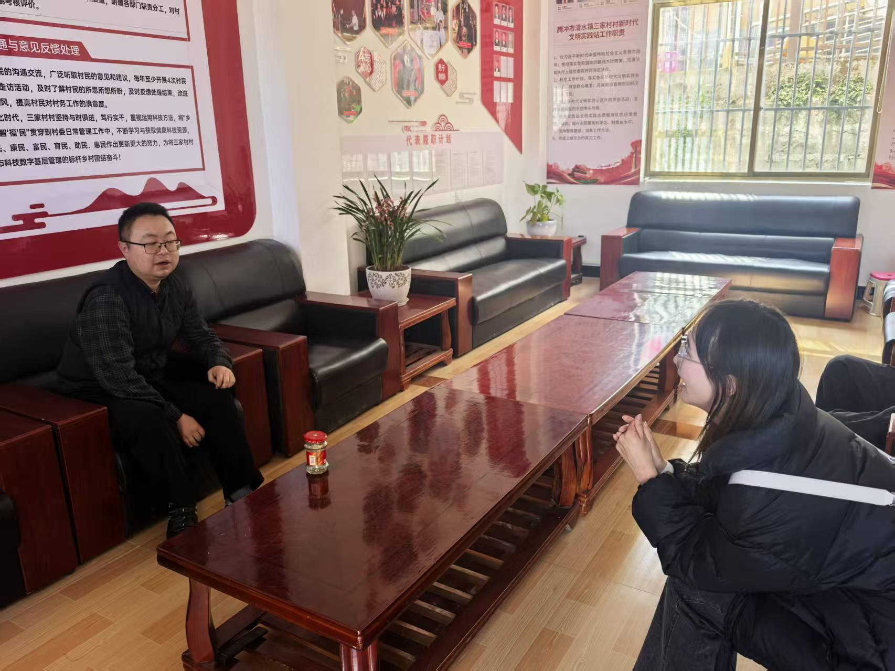

3
核心研究目标
聚焦共同体意识实践
模块五
本项目以腾冲司莫拉佤族村为核心案例，构建民族团结与中华民族共同体意识科普专题平台。 通过田野调研、资料梳理与网页呈现，形成可持续发展的研究成果与公众传播产品。

聚焦共同体意识实践
案例 · 文化 · 旅游等
多方法交叉验证
已系统推进实施
研究与传播并重
01
02
案例背景与现实场景
党建引领与治理实践
火塘会与协商机制
乡村振兴与产业发展
文化传承与旅游融合
03
政策与理论梳理
量化数据采集
口述资料整理
统计与可视化
多维度剖析
实地走访访谈
04
资料收集、方案设计、前期调研
深入调研、数据采集、内容撰写
成果整理、平台完善、推广应用
05
研究报告与论文
2 篇+科普专题网页
1 套调研数据与资料库
1 套宣讲课件与视频
3 项+案例集与传播手册
1 册项目总结与成果汇编
1 份继续阅读
项目概览负责说明研究为什么这样展开、准备产出什么内容；如果要继续查看团队说明与建议入口，可以进入关于我们，也可以直接回到首页总览整站结构。